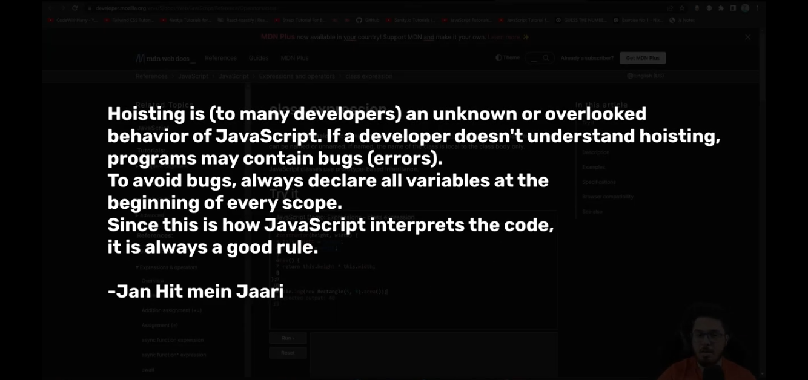

JS
CONTENT:-
Introduction
- JavaScript is a scripting or programming language that allows you to implement complex features on web pages — every time a web page does more than just sit there and display static information for you to look at — displaying timely content updates, interactive maps, animated 2D/3D graphics, scrolling video jukeboxes, etc. — you can bet that JavaScript is probably involved. It is the third layer of the layer cake of standard web technologies, two of which (HTML and CSS)
- JavaScript is a scripting language that enables you to create dynamically updating content, control multimedia, animate images, and pretty much everything else. (Okay, not everything, but it is amazing what you can achieve with a few lines of JavaScript code.)
JS History
JavaScript was invented by Brendan Eich in 1995.

It was developed for Netscape 2, and became the ECMA-262 standard in 1997.
After Netscape handed JavaScript over to ECMA, the Mozilla foundation continued to develop JavaScript for the Firefox browser. Mozilla's latest version was 1.8.5. (Identical to ES5).
Q. What does ECMA stand for?
Ecma International (formally European Computer Manufacturers Association) is a non-profit organization that develops standards in computer hardware, communications, and programming languages. On the web it is famous for being the organization which maintain the ECMA-262 specification (aka. ECMAScript) which is the core specification for the JavaScript language.
Java VS JavaScript (key differences)
JavaScript (Interpreter)
- Runs slowly
- Starts right away
- Let’s you see the Results
(Translates line by line)
Java (Compiler)
- Extra preparation time
- But then program Runs very quickly
(File’s together entire program translates all in one)
Introduction to programming


C1- Variables & Data


C2- Expressions & Conditionals


C3- Loops & Functions


C4- Strings


C5- Arrays


C6- JavaScript in the Browser


C7- Walking the DOM


C8- Events & other DOM properties


C9- Callbacks, Promises & async/await


C10- Object Oriented Programming


C11- Advanced JavaScript


